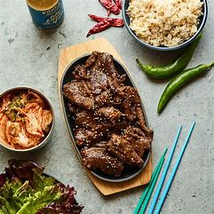
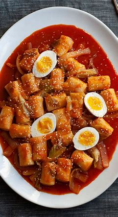

Bulgogi
Ingredients: Beef, Soy Sauce, Sugar, Sesame Oil
Preparation Steps:
- Marinate beef in soy sauce, sugar, and sesame oil for 1 hour.
- Grill or pan-fry until caramelized.
- Serve with lettuce wraps.

Galbi Jjim
Ingredients: Beef Short Ribs, Soy Sauce, Radish, Chestnuts
Preparation Steps:
- Marinate ribs in soy sauce and sugar.
- Simmer with radish and chestnuts for 1 hour.
- Cook until meat is tender.
- Serve with rice.

Haemul Pajeon
Ingredients: Flour, Seafood, Green Onion, Egg
Preparation Steps:
- Mix flour with water and egg for batter.
- Add seafood and green onions, spread on a pan.
- Cook until crispy on both sides.
- Serve with dipping sauce.
Kimbap
Ingredients: Nori, Rice, Carrot, Spinach, Tuna
Preparation Steps:
- Cook seasoned rice and prepare fillings.
- Roll rice and fillings in nori sheets.
- Slice into bite-sized pieces.
- Serve with soy sauce.

Soondubu Jjigae
Ingredients: Soft Tofu, Pork, Kimchi, Egg
Preparation Steps:
- Sauté pork and kimchi in a pot.
- Add broth and tofu, simmer for 10 minutes.
- Crack an egg on top, cook until set.
- Serve hot.

Tteokbokki
Ingredients: Rice Cakes, Gochujang, Fish Cake, Sugar
Preparation Steps:
- Boil rice cakes in water until soft.
- Add gochujang and fish cake, simmer for 10 minutes.
- Stir in sugar to balance flavor.
- Serve hot.